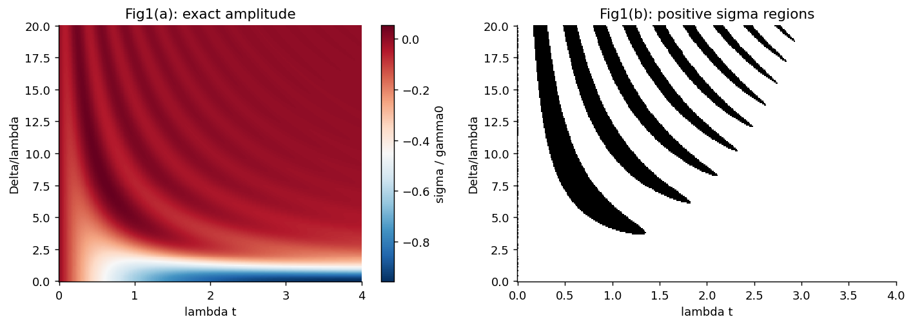
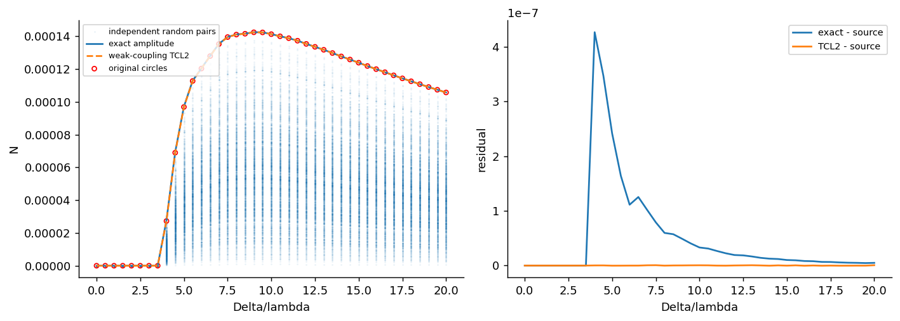

信息回流、非马尔可夫性峰值及态对比较得到支持。
核对版本：0908.0238v2 · 期刊原文
任务范围：网格投影与近似阶次的残差仍需区分，未将量化对比完成当作整图完全一致。

独立计算结果。诊断变体以图例和说明为准，不自动替代论文条件。

必要的源结果与独立计算对照。Comparison reference: Phys. Rev. Lett. 103, 210401 (2009), Measure for the Degree of Non-Markovian Behavior of Quantum Processes in Open Systems, DOI 10.1103/PhysRevLett.103.210401; fixed source 0908.0238v2. Colored curves/maps are independent calculations; any source marks are limited validation excerpts, excluded from the repository content license. Graphic agreement does not establish author-array equality. Original figures and digitized source point sets are not redistributed.